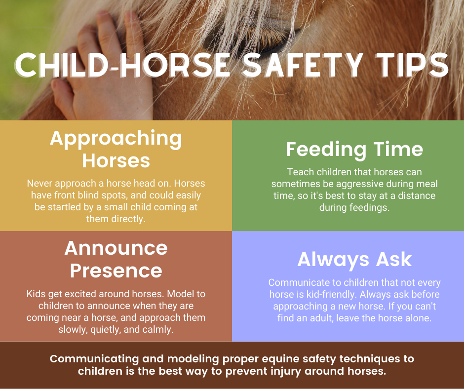

•Balanced Diet: Horses require a balanced diet of hay, grain, and supplements to meet their nutritional needs.
• Fresh Water: Ensure the horse always has access to clean, fresh water. Hydration is crucial for their health.
• Quality Forage: Provide high-quality hay or pasture for grazing, which is a primary component of a horse's diet.
• Primary Diet Component: Forage, which includes hay and pasture, should make up the bulk of a horse's diet. Horses are natural grazers and need a continuous supply of fiber.
•Constant Access to Fresh Water: Horses need a continuous supply of clean, fresh water. This is especially important in hot weather or during intense exercise.
• Water Requirements: On average, a horse drinks between 5 to 10 gallons (19 to 38 liters) of water per day, though this can vary based on activity level, temperature, diet, and size.
• Electrolyte Supplementation: For horses that sweat heavily or are in hot climates, consider electrolyte supplements to help maintain hydration and replace lost salts.
1. Roof Maintenance
• Regular Inspection: Check the roof for leaks, loose shingles, or other damage, especially after storms.
2. Structural Integrity
• Wall and Floor Inspections: Look for signs of damage, such as cracks, warping, or mold, to catch issues early.
3. Weatherproofing
• Insulation: Properly insulate the house to maintain a comfortable temperature and reduce energy costs.
1. Routine Cleaning
• Daily Tasks: Vacuum, sweep, and wipe down commonly used surfaces to maintain cleanliness.
• Weekly Tasks: Mop floors, clean bathrooms, and do laundry.
2. Home Maintenance
• HVAC System: Change air filters regularly and schedule annual maintenance.
3. Safety Checks
• Smoke and Carbon Monoxide Detectors: Test regularly and replace batteries as needed.
1. Regular Trimming
• Horses' hooves grow continuously, requiring regular trimming by a professional farrier. This typically occurs every 6 to 8 weeks but can vary based on factors like growth rate and activity level.

2. Farrier Visits
• Schedule regular visits with a skilled farrier. They can trim, shape, and balance the hooves, ensuring proper structure and alignment. A farrier can also identify and address hoof problems early.
3. Hoof Cleaning
• Clean your horse's hooves daily, especially before and after riding. Use a hoof pick to remove dirt, rocks, and debris from the frog and sole. This helps prevent infections like thrush and other hoof-related issues.
1. Routine Examinations
• Regular veterinary check-ups help maintain your horse's health. These examinations typically include a general physical check, assessment of vital signs, and observation for any signs of illness or injury.

2. Vaccinations
• Vaccination is vital to protect horses from common equine diseases. Work with your veterinarian to develop a vaccination schedule based on the horse's age, location, and exposure risk.
3. Deworming
• Horses are prone to internal parasites, which can cause health issues. A deworming plan, customized to the horse's environment and risk factors, helps prevent infestations. Your veterinarian can recommend appropriate deworming strategies.
1. Regular Dental Examinations
• Horses need regular dental check-ups, usually once or twice a year, depending on age, diet, and dental history. These exams are typically done by an equine dentist or veterinarian with dental expertise.

2. Floating Teeth
• As horses age, their teeth can develop sharp edges or uneven surfaces due to constant chewing and grinding. The process of smoothing these rough edges is known as "floating." It helps prevent injuries to the tongue and cheeks and ensures a more efficient chew.
3. Sedation for Dental Procedures
• Some dental procedures require sedation to ensure the horse's safety and cooperation. Discuss the need for sedation with your veterinarian or equine dentist.
1. Secure Fencing
• Ensure that all paddocks, pastures, and arenas have secure and sturdy fencing. The fencing should be high enough to prevent jumping, without sharp edges or protrusions that could cause injury.

2. Safe Equipment and Tack
• Regularly inspect tack and equipment (saddles, bridles, halters, leads, etc.) for signs of wear and tear. Replace damaged or broken items immediately to avoid accidents.
3. Proper Lighting
• Ensure all areas where horses are housed or exercised have adequate lighting, especially around barn areas, pathways, and arenas. Good lighting helps prevent accidents and allows for better observation of horse behavior.
• Brushing: Use a curry comb or rubber curry brush to loosen dirt, debris, and loose hair from the coat. Follow with a stiff brush to remove the loosened dirt, and then a soft brush for a smooth finish.
• Hoof Cleaning: Clean the hooves with a hoof pick, removing dirt, rocks, and debris from the hoof's sole and frog. Check for signs of infection or injury, such as cracks or swelling.
• Mane and Tail Care: Gently detangle and brush the mane and tail. Use a wide-toothed comb or a soft brush to avoid breaking the hair. Detangling sprays can help with knots and tangles.
1. Importance of Companionship
• Natural Herd Behavior: Horses are herd animals by nature. They have evolved to live in groups for safety and social interaction. Companionship helps them feel secure.
2. Socialization with Other Horses
• Group Turnout: If possible, allow your horse to be in a paddock or pasture with other horses. This allows them to interact, play, and establish social bonds.
• Gradual Introduction: When introducing a new horse to a group, do so gradually to avoid conflicts and ensure they integrate smoothly.